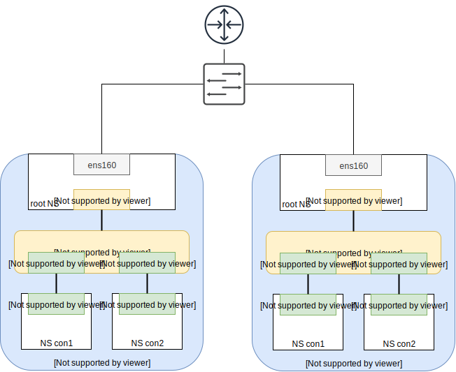

Data Packet's (not) secure journeys in containerland
Part I
Vainius Dangovas
IT solution architect
Purpose of this talk
- Ongoing container orchestration tool development requires understanding key concepts
- A lot of abstraction levels hide the technology details
- Understanding:
- what is really complex
- what is simple, just in large scale
- Filling the gaps that are created doing copy/paste installations and configurations
Tools and technologies
- Container technologies are trendy and fresh :)
- 4 terms/tools allow explaining most of the available network features
- Basic Linux usage knowledge required
- Basic networking concept knowledge required
IP route2 (2006)
- CLI utility suite for network management and monitoring
- Manage different network objects using consistent syntax
- Toolkit that replaced net-tools (ifconfig, vconfig, route, arp etc.)
- Usability and flexibility shown in demo setup scripts
- Lots of documentation
Linux namespaces (2002)
- Fundamental aspect of containers
- Mount - isolate filesystem mount points
- UTS - isolate hostname and domain name
- IPC - isolate interprocess communication (IPC) resources
- PID - isolate the PID number space
- Network - isolate network interfaces
- User - isolate UID/GID number spaces
- Cgroup - isolate cgroup root directory
- In R&S terms - VRF or routing instance
Linux network devices
- veth (virtual Ethernet device) - local Ethernet tunnel
- similar to tap device
- allows connectivity between network namespaces
- bridge - closest to a network switch inside Linux
- tun/tap - kernel software loopback mechanism that forwards (L2/L3) packets to a userspace program
- macvlan
- ipvlan
- ipip
- gre, vxlan, geneve
iptables (2000)

- Everyone knows it... a little
- Concepts:
- Tables
- Chains
- Targets
- Features:
- Firewalling
- SRC/DST NAT (masquerade)
- Custom chaining
IPVS - LVS (1998)
- No one knew it... until containers
- L4 in-kernel loadbalancer
- Features:
- LB methods: rr, wrr, lc, wlc, src/dst hash, ...
- Persistence
- Flexible service definition
- Direct return, IPIP, SNAT
- Actually used in high scale LB
Legend and topology
What is a container?
Container = Isolated resources + Resource limitations + Files
Network namespace (NS) in action
- Network namespace "con1" with virtual interface veth10
- No "normal" L3 gateway - route to itself via veth tunnel
- Reachability only inside a node
NS implemented
NS ingress/egress traffic
- L3 gateway: bridge interface. Route to default gateway br1 172.16.1.1/24
- Ingress/egress solutions depend on NAT or external reachability information
NS ingress/egress traffic
Increasing # of NS
- Container horizontal scale in node/multiple nodes
- Starting to feel like the real container use case
- Increasing amount of choices
Single node - multiple NS
- Network namespaces reside in a LAN - L2 connectivity available
- Iptables support firewalling bridged traffic
- Ingress/egress solutions depend on NAT or external routing knowledge
- Network structure in a node choices:
- Flat L2
- Container in a subnet
- Mix and match
- Alternative Linux network devices
Multiple node topology
Multi-node topology implemented
Other Multi-Node topologies and approaches
- Multi-Node container environment integrated with physical network:
- Orchestrated physical network fabrics
- Network reachability information adjacencies
- New software integrations on network equipment
- At least two independent software vendors
- A separate overlay network solely done by container hosting nodes:
- Simpler physical transport network
- Tunneling traffic and reachability information exchange methods
- Server solutions inventing the wheel
- Serverside hardware dataplane acceleration development and integration
Services in Multi-Node topologies
Ingress traffic to services [IPVS]
Distributed service delivery problems
- Distributed ingress - redundant, but undeterministic
- Double load balancing
- Suboptimal data path with E-W
- Multilayer SNATs to solve traffic asymmetry
What makes container environments difficult to manage?
- Inconceivable amount (for humans) of dynamic state
- Anything can be anywhere
- No/little network troubleshooting tools
- Abstracted/layered solutions
Implementations in real life solutions
Most solutions divide into two groups:
- Popular orchestrated OSS solutions: Kubernetes, Docker CE (Swarm)
- Productized solutions: Kubernetes by $Vendor, Docker EE (Swarm)
Any way leads to the same solutions, only different maintenance and support models
Implementations in real life solutions: Docker Swarm
Good for smaller scale deployments or where as much as possible should be out-of-the-box.
- Extensively uses internal overlays
- Services access distributed on all nodes
- Internal load balancing by iptables + IPVS (difficult to seek by hand)
Implementations in real life solutions: Kubernetes
Simpler from network standpoint, extensible architecture, used for extremely large deployments.
- Uses as little layers as possible
- NATless, where possible. Similar to routed multi-node option
- Various service delivery methods
- ClusterIP (internal service)
- NodePort (essentially DNAT to virtual service) - first overlay
- Load Balancer - external balancer integration
- Ingress - application load balancer instance
- Internal load balancing by kube-proxy (userspace), iptables, IPVS
What's ahead?
- Container solutions inside-out
- Network plugins and CNI
- External network integrations
- Distributed network security policies
- Sidecar proxies - distributed application level security policies
Credits
Kristen Jacobs - Container Networking (Video, Source)
SMN colleagues
CNI and Container networking configuration (Video)
Docker Swarm networking article
Manual page, article and stackoverflow topic authors